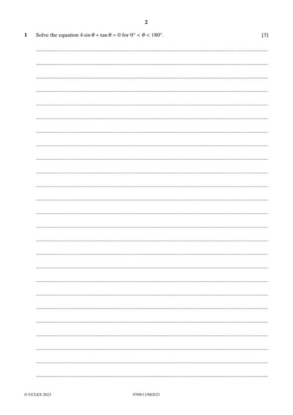

Question 1

Original paper page 2
Part 1 — solution
- [M1] sin
Mark points
- [M1] sin
Part 1 — solution
- [M1] WWW Factorise, not divide by sin or tan . May
Mark points
- [M1] WWW Factorise, not divide by sin or tan . May
Part 1 — solution
Answer: B1
B1
y 2 2 1
Mark points
- Correct result: B1
Part 1 — solution
- [DM1] Obtain/use: 1 1 1 1
Mark points
- [DM1] Obtain/use: 1 1 1 1
Part 1 — solution
Answer: A1 1
- [DM0] then x , award A0XP then B0 B0
Mark points
- [DM0] then x , award A0XP then B0 B0
Part 1 — solution
Answer: 2 · OR d 2 d 0
2
OR d 2 d 0
Mark points
- Correct result: 2
- Correct result: OR d 2 d 0
Part 1 — solution
Answer: OR Eqn of normal y 1 their " " x
3 2 4 mT
OR Eqn of normal y 1 their " " x
Mark points
- Correct result: OR Eqn of normal y 1 their " " x
Part 1 — solution
- [A1] SOI For at least one intercept correct or correct
Mark points
- [A1] SOI For at least one intercept correct or correct
Part 1 — solution
Answer: 5 5
5 5
from lengths: 5 or by integration.
Mark points
- Correct result: 5 5
Part 1 — solution
dy 1
3
y 2 100 x 2 100 x 2 2 2 x .
dx 2 4
Mark points
- Include the ideas shown in the solution above.